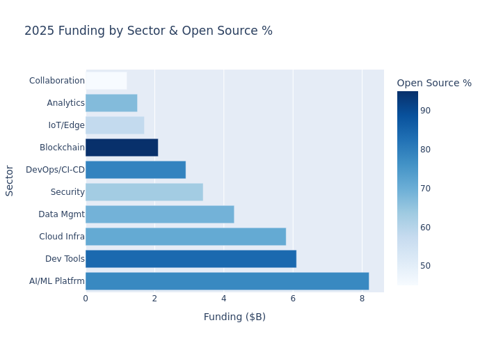
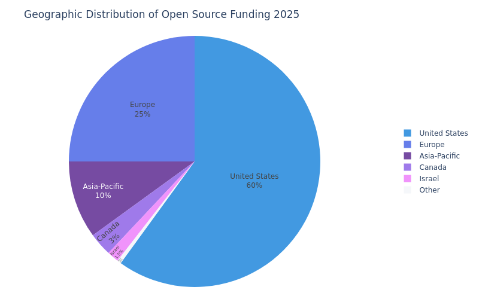
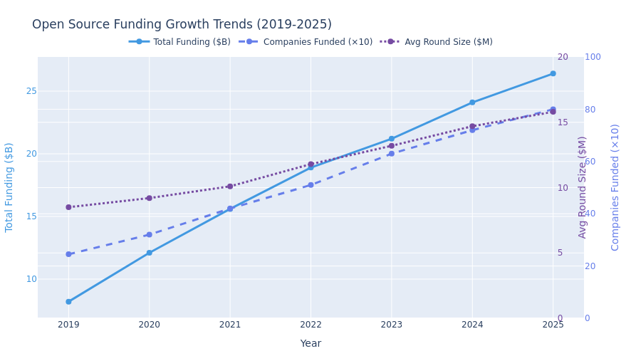

📊 Open Source Market Dashboard
$26.4B
Total COSS Funding 2025
800+
Funded Companies
7x
Higher IPO Valuations
14x
Higher M&A Multiples
2.3x
Higher Unicorn Rate
50%
Faster Development
Funding by Sector
GitHub Stars vs Exit Valuation

Geographic Distribution
Growth Trends
This is a demonstration dashboard. Interactive charts and real-time data will be added in future updates.
Data sources: Linux Foundation, GitHub, CNCF, Industry Reports